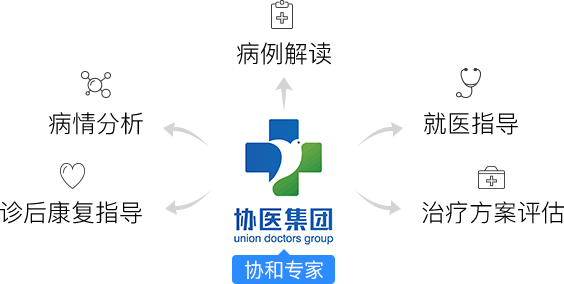
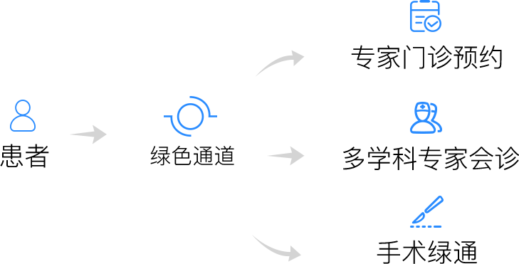

服务亮点
- 覆盖34种重疾
- 专家1对1咨询
- 48小时响应
- 手术绿色通道
服务内容
 保障34种重大疾病
- 恶性肿瘤
- 急性心肌梗塞
- 脑中风后遗症
- 移植手术
- 终末期肾病
查看34种病症
推荐理由
为父母送上安心
家人生病需要照顾；而家人看病，忙于工作的我们不能随时陪伴在家人身旁；医互保所做的就是让你消除得病后迷茫，直达协和医院！
彻底消除黄牛
当你面对上千块的黄牛号的时候，你的无奈我们十分理解。所以医互保就是让你不再担心黄牛，找到权威专家！
1
服务申请
2
判断条件
3
进行接诊
4
康复阶段
 用户提前24小时通过企业医生发起服务申请。
协医医疗顾问接到需求，同患者沟通，并判断是否可以由专家接诊。不满足专家接诊需求（如缺少检查报告等），继续 检查；满足后协调相应科室专家服务。
专家、医疗顾问同患者一起进行远程咨询, 长达30分钟（电话或视频) 。
结束, 并将结果留存, 依据专家建议, 视情况启动就医绿色通道服务。
用户提前24小时通过企业医生发起服务申请。
协医医疗顾问接到需求，同患者沟通，并判断是否可以由专家接诊。不满足专家接诊需求（如缺少检查报告等），继续 检查；满足后协调相应科室专家服务。
专家、医疗顾问同患者一起进行远程咨询, 长达30分钟（电话或视频) 。
结束, 并将结果留存, 依据专家建议, 视情况启动就医绿色通道服务。
典型案例
2017年9月18日
河北A公司为小张购买了“协医健康无忧计划”会员服务
2018年2月10日
小张体检查出脑肿瘤；经当地二甲医院确诊
2018年2月12日
小张通过公司的企业医生提交自己的检查报告
2小时后
协医集团医疗助理接收到小张的病例报告，并转交给协和系医生集团神经外科主任专家王主任
4小时后
医疗助理接通了小张、王主任的电话，王主任为小张做了远程 会诊咨询；王主任针对小张的病情，进行了病情分析，就医指导和治疗方案选择的推荐
根据小张的病情，医互保为小张启动就医绿色通道，在三日后抵京看病
小张于治疗后回家进行康复修养
医护保健康保障计划公约
服务须知
本服务计划为企业客户及其家属服务，个人购买服务无效。
本服务计划定位于帮助企业员工、家属或客户找到更好、更 合适的医疗解决方案，所以该服务仅限于不幸罹患计划规定 疾病的企业员工或客户使用（即过了等待期，有初次确诊疾 病的诊断结果），平时申请无效。
本服务计划等待期为3个月，即从购买日期开始三个月之后才 能使用；有效期一年（含三个月独立等待期），自购买该服 务后一年内申请时有效；本服务一年有效期内仅限使用一次。
支持全国企业客户购买该增值服务，通过互联网为您对接协 医集团专家，给自己及家人更好的选择。
本服务购买一份仅对应服务一个会员，如需服务覆盖更多家人，需根据覆盖的人数购买多份。